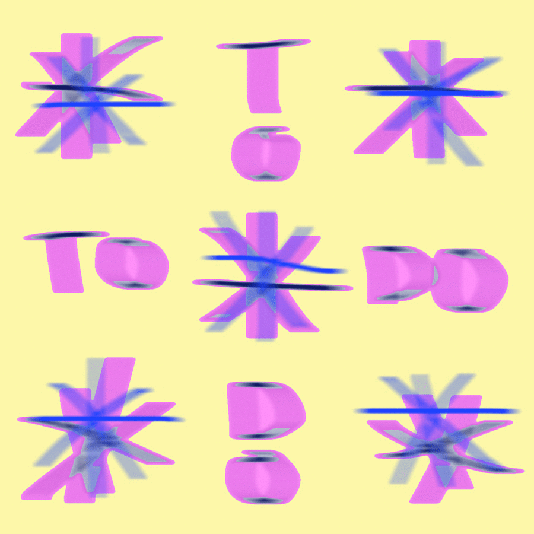

Hi! 🍳 I'm an artist living in Vancouver, Canada, and
I work with code to make drawings and paintings that explore the aesthetics
of computation.
I'm currently making generative drawings using a pen plotter of my own design and experimenting with procedurally animated stereoscopic websites.
Get in touch with me at
I'm currently making generative drawings using a pen plotter of my own design and experimenting with procedurally animated stereoscopic websites.
Get in touch with me at
grunskm@gmail.com if you want to chat about
creative coding, pen plotting, painting, stereoscopy, (or anything else really).
A Fine Line @ Trapp Projects
A selection of my recent drawings be featured in the exhibition 'A Fine Line' at Trapp Projects (Vancouver), alongside the paintings of M.E. Sparks. The show will run from June 12 to 26, and will be open to the public on Saturdays and Sundays between 12-5 PM.

Visit Site
To-Do-To-Do
Presented by Number 3 Gallery as part of their SPAM monthly newsletter, To-Do-To-Do is a website collaboration between myself and M.E. Sparks. The project features a series of smaller web pages looking at different forms of list making.